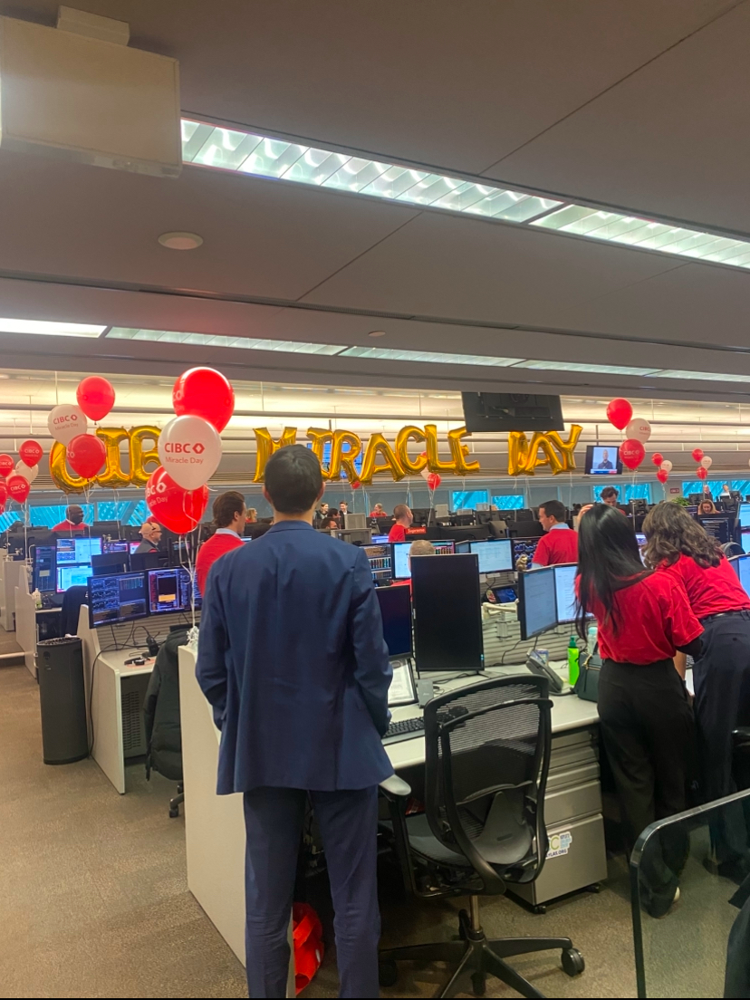
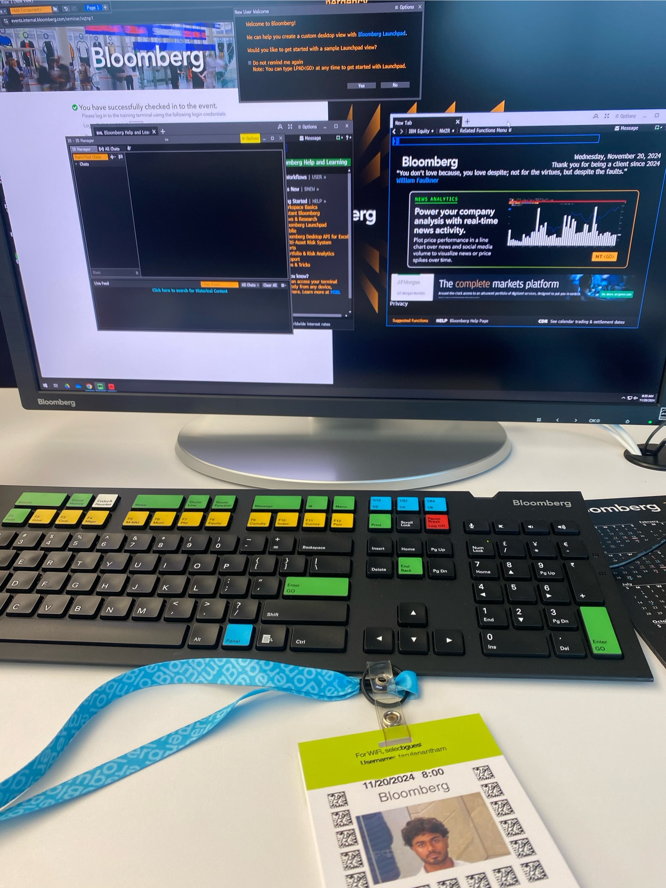

Working At CIBC
My office was right in front of Union Station, I got to see the CN Tower everyday!
Introduction
Hi everyone! My name is Thanush, and I am pursuing a Bachelor of Computing in Computer Science (co-op) at the University of Guelph.
As of now, I have completed two years of my degree and am in the process of finishing my second co-op work term.
My second co-op term was with CIBC (Canadian Imperial Bank of Commerce) as a Technical Systems Analyst on their Market Data Support team at CIBC Capital Markets.
I was fortunate to return to the same team for my second co-op term, which allowed me to build on my previous knowledge and take on more advanced responsibilities.
At CIBC, I had the unique opportunity to build on my previous experience by working on a broader range of impactful projects.
This allowed me to continue learning within the world of finance and technology, take on more challenging responsibilities, and contribute more meaningfully to the team's success.
In this report, I will reflect on my experience here at the bank and how the past 4 months have impacted my career.
Information About The Employer
CIBC is widely known as one of the top five banks in Canada. It serves over 14 million personal banking, business, public sector, and institutional clients in Canada, the United States, and around the world. The office where I worked is located at 161 Bay Street on the 4th floor of the TD Canada Trust Tower. Many of CIBC's offices, including the trade floor, occupy several floors in this building. The areas of computer science most relevant to my role at CIBC include IT troubleshooting and software development.
Interesting Facts
- The company was founded in 1867 and has since grown to become one of the biggest and best banks in the country.
- CIBC operates out of three main locations in downtown Toronto: its headquarters at 81 Bay Street, known as CIBC Square; 161 Bay Street, also known as the TD Canada Trust Tower, which includes the trade floor; and 595 Bay Street, referred to as Atrium on Bay.
- There were over 200 fall interns this work term, divided amongst many sections within the bank.

Miracle Day at CIBC! This is a day where all of the profits made on the tradefloor are donated to various charities.
Learning Goals
My 5 goals were...
- To communicate better with clients within CIBC as well as third party vendors
- Resolve user issues more efficiently, minimizing downtime and enabling users to resume their tasks quickly
- To actively contribute to key projects where I can make a meaningful impact towards the company
- Improve my understanding of the market data platforms and tools my team uses
- To continuously improve my skills and knowledge in order to make a meaningful impact in my role
After the first four months in my role, I had a solid understanding of my daily responsibilities, which often involved resolving user issues. I realized that to be successful, I needed to focus on two key areas: communicating effectively with users and thinking quickly to solve problems. With that in mind, I set goals for the rest of my term to improve these skills. I also wanted to deepen my understanding of the market data platforms my team relied on and learn more about how market data is used on the trade floor. Once more comfortable in my role, I started working more with technologies like Bloomberg, Thomson Reuters, and Refinitiv. Becoming familiar with these tools helped me provide better support, troubleshoot issues more effectively, and take on bigger projects. By the end of my term, I had achieved several of my goals. I became more confident in my communication skills, improved my ability to resolve user issues quickly, and gained a much stronger understanding of the platforms we used. These improvements allowed me to handle more complex tasks and work more effectively with my team and external vendors.
Job Description And Projects
During this co-op term, my role involved a variety of tasks, one of the most significant being leading the Datascope Plus migration at CIBC, an investment banking tool widely used by traders across the bank. This project required me to coordinate with multiple teams within the bank to integrate the software solutions they needed. As part of this project, I held weekly meetings with various teams to ensure alignment and progress, create files for them in preparation for production launch, and ensured their data was tailored towards their needs. My goal was to make the transition as smooth as possible for all teams involved, addressing any issues along the way. In addition to the migration project, I was responsible for managing over 500 Bloomberg terminals across the bank. This involved resolving technical issues with third-party vendors, troubleshooting software problems, and ensuring the terminals functioned seamlessly for end-users. These responsibilities gave me hands-on experience in vendor management and strengthened my ability to handle time-sensitive issues in a high-pressure environment. Together, these tasks provided a well-rounded experience that improved my technical, communication, and project management skills while allowing me to make a meaningful impact during my term.
The most interesting and unique part of my job is interacting with users on the trade floor every day. I enjoy helping others solve problems, especially when they get stuck on technical issues. By fixing these problems quickly, I can make a big difference in their workflow. When I help them get back to work faster, it improves their productivity and makes their job easier. It feels rewarding to know that my support has a direct impact on their day-to-day tasks. Plus, solving these issues helps me build better technical skills and stronger relationships with the people I help.
Within my role, I was fortunate to attend events such as the Bloomberg Technical Training Session and Miracle Day hosted by CIBC, both of which were incredible experiences. The Bloomberg Technical Training was an informative session on the Bloomberg Terminal's capabilities and functionality—a vital tool in my role that allows me to support traders. It was an excellent opportunity to learn directly from experts, gain insights into advanced features, and enhance my ability to troubleshoot and resolve issues efficiently. Miracle Day, on the other hand, was a unique and inspiring event. Hosted annually by CIBC, Miracle Day is a charitable initiative where a portion of the revenue generated from trading is donated to children’s charities. Throughout the day, many celebrities were present, including famous sports players such as Dwayne De Rosario and Dr. J. These experiences not only taught me a lot but also gave me a deeper appreciation for the organization’s culture and values.
Me at the Bloomberg head office!
Conclusion
This co-op experience has been an incredible opportunity for my personal and professional growth. Over the past four months, I have not only built on my technical skills but also developed soft skills that helped me succeed in my role. These are skills I know will stick with me as I continue to grow and take on new challenges in the future. One of the most interesting parts of my role was seeing how finance and technology come together and work hand-in-hand within the bank. It has been an eye-opening experience and an important step in my career, giving me a clearer picture of what it's like to work in the computer science field and all the different directions it can take me. On top of growing and improving my technical knowledge, I have improved my communication and teamwork skills and learned how to stay calm and focused under pressure. I have also had the chance to meet and work with some amazing people, including fellow co-ops and full-time employees, and those connections have made my time here even more rewarding. As I wrap up my term as a Technical Systems Analyst with the Market Data Support team, I am grateful for everything I have learned and the opportunities I have had. This experience has been unforgettable, and it's one I’ll carry with me as I move forward in my career.

The main sign at CIBC Square
Acknowledgments
I want to sincerely thank the entire Market Data Support team—Johnny Leung, Matthew Cheung, Jonathan Carron, and William Hendrickson—for their incredible support and guidance over the past four months. I truly appreciate the time and effort they invested in helping me learn and grow, whether it was by sharing their expertise or trusting me with meaningful projects. I am so grateful for the opportunity to work alongside such a talented and supportive group. It has been an amazing experience, and I will genuinely miss being part of the MDS team.